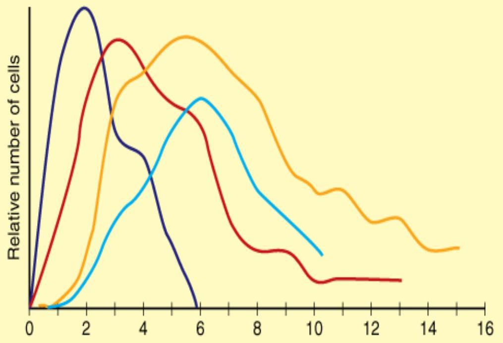

Wound Care and Suturing
Introduction to Wounds
A wound is a physical injury compromising the normal integrity of the skin. It may involve the underlying structures i.e., tendons, muscle, bone etc. A wound is also defined as a breach (damage) in a normal tissue (May be superficial or deep) resulting accidentally or from planned surgery.
Types of Wounds
Acute Wound: Disruptions to the integrity of the skin +/- the underlying tissues that progresses to heal continuously/timely through the normal phases of healing (Hemostasis, Defensive/Inflammatory, Proliferative, Maturation).
Chronic wound: Disruptions in the skin which does not progress to heal normally. The process of healing mostly stagnates at the inflammatory phase.
Soft Tissues and Mechanism of Injury
The term soft tissues refers to those parts which are not bone or cartilage. From the point of view of injuries, it is necessary to consider the skin, muscles, tendons, ligaments, blood vessels and nerves. It is vital to consider not only what structures have been damaged, but also how the damage has come about, known as the mechanism of injury.
- Injuries may be either blunt or penetrating.
- They may occur by external insult, such as a cut by a knife, or indirectly, such as a nerve damaged by the sharp end of a bone.
- The amount of energy imparted to the soft tissues is proportional to the degree of violence applied.
Wound Classification
The most useful classification of wounds from a practical point of view is that of Rank and Wakefield into tidy and untidy wounds.
Tidy Wounds
Tidy wounds are inflicted by sharp instruments and contain no devitalised tissue; such wounds can be closed primarily with the expectation of quiet primary healing. Examples are surgical incisions, cuts from glass and knife wounds. Skin wounds will usually be single and clean cut. Tendons, arteries and nerves will commonly be injured in tidy wounds, but repair of these structures is usually possible. Fractures are uncommon in tidy wounds.
Untidy Wounds
Untidy wounds result from crushing, tearing, avulsion, vascular injury or burns, and contain devitalised tissue. Skin wounds will often be multiple and irregular. Tendons, arteries and nerves may be exposed, and might be injured in continuity, but will usually not be divided. Fractures are common and may be multifragmentary. Such wounds must not be closed primarily; if they are closed wound healing is unlikely to occur without complications. At best there may be wound dehiscence, infection and delayed healing, at worst gas gangrene and death may result. The correct management of untidy wounds is wound excision, by this is meant excision of all devitalised tissue to create a tidy wound. Once the untidy wound has been converted to a tidy wound by the process of wound excision it can be safely closed (or allowed to heal by second intention).
Surgical Wound Classification
Surgical wounds have been classified as clean, clean-contaminated, contaminated, and dirty-infected.
| Classification | Description | Infective Risk (%) |
|---|---|---|
| Clean (Class I) | Uninfected operative wound. No acute inflammation. Closed primarily. Respiratory, gastrointestinal, biliary, and urinary tracts not entered. No break in aseptic technique. Closed drainage used if necessary. | <2 |
| Clean-contaminated (Class II) | Elective entry into respiratory, biliary, gastrointestinal, urinary tracts and with minimal spillage. No evidence of infection or major break in aseptic technique. Example: appendectomy. | <10 |
| Contaminated (Class III) | Nonpurulent inflammation present. Gross spillage from gastrointestinal tract. Penetrating traumatic wounds <4 hours. Major break in aseptic technique. | About 20 |
| Dirty-infected (Class IV) | Purulent inflammation present. Preoperative perforation of viscera. Penetrating traumatic wounds >4 hours. | About 40 |
Phases of Wound Healing
Primarily, the body has the capability of healing the wound on its own. The stages of wound healing are a complex and fragile process. Failure to progress in the stages of wound healing can lead to chronic wounds. There are 4 phases of wound healing: Hemostasis, Defensive/Inflammatory, Proliferative, and Maturation.
1. Hemostasis Phase
This is the process of the wound being closed by clotting. Hemostasis starts when blood leaks out of the body. The first step is when blood vessels constrict to restrict blood flow. Next, platelets stick together to seal the break in the wall of the blood vessel. Finally, coagulation occurs and reinforces the platelet plug with threads of fibrin. The formation of a thrombus or clot keeps platelets and blood cells trapped in the wound area.
2. Inflammatory Phase
Inflammation is the second stage and begins right after the injury when the injured blood vessels leak transudate (made of water, salt, and protein) causing localized swelling. This phase both controls bleeding and prevents infection. The fluid engorgement allows healing and repair cells to move to the site of the wound. During the inflammatory phase, damaged cells, pathogens, and bacteria are removed from the wound area by white blood cells. This process creates the swelling, heat, pain and redness commonly seen during this stage.
3. Proliferative Phase
The proliferative phase is when the wound is rebuilt with new tissue made up of collagen and extracellular matrix. The wound contracts as new tissues are built. A new network of blood vessels must be constructed so that the granulation tissue can be healthy and receive sufficient oxygen and nutrients. Myofibroblasts cause the wound to contract by gripping the wound edges and pulling them together. In healthy stages, granulation tissue is pink or red and uneven in texture. In the final phase of this stage, epithelial cells resurface the injury, a process which is faster when wounds are kept moist.
4. Maturation Phase (Remodeling)
Also called the remodeling stage, this is when collagen is remodeled from type III to type I and the wound fully closes. The cells that had been used to repair the wound but are no longer needed are removed by apoptosis (programmed cell death). During this phase, collagen is aligned along tension lines, and water is reabsorbed so the collagen fibers can lie closer together and cross-link. This reduces scar thickness and makes the skin area of the wound stronger. Remodeling begins about 21 days after an injury and can continue for a year or more. Healed wound areas generally only have 80% of the tensile strength of unwounded skin.
Types of Wound Closure and Healing
Methods of Wound Closure
- Primary Closure: Edges of the wound can be approximated and bound together (e.g., through stapling, suturing, gluing or taping). Healing occurs by primary intention.
- Secondary Closure: The wound is allowed to granulate & re-epithelialize. Healing occurs by secondary intention.
- Delayed Primary Closure (Tertiary Intention): Mostly done when an already existing open wound is closed similarly to primary wound closure. Debridement has to be done prior.
Types of Wound Healing
Factors Affecting Wound Healing
Many factors can interfere with the phases of healing, causing improper or impaired wound healing. These can be categorized as systemic (relating to the patient's overall health) and local (relating to the wound itself).
Systemic Factors
- Age: Everything slows down during the aging process, including the phases of wound healing. The skin thins, and the inflammatory response decreases.
- Nutrition: Proper nutrition is vital. The wound cannot heal properly if the patient lacks the necessary nutrients for collagen synthesis. Protein deficiency is particularly detrimental.
- Obesity: A patient who weighs 20 percent more than their ideal body weight has a higher risk of infection. Adipose tissue has decreased perfusion, which can delay healing.
- Systemic Diseases: Conditions like Diabetes Mellitus, malnourishment, and immunodeficiency play an enormous role. Diabetes predisposes patients to wounds due to diminished sensation, poor arterial flow, and compromised immunity.
- Tissue Hypoxia: Limited oxygen supply to the wound prevents collagen production. This can be caused by arterial occlusions, hypotension, or smoking.
- Medications: Prolonged steroid use can lead to thinning skin. Other drugs can also compromise healing.
- Smoking and Alcoholism: Smoking leads to tissue hypoxia. Alcohol can delay wound closure and increase infection risk.
Local Factors
- Infection: The patient's immune competence and the size of the bacterial inoculum determine whether the wound will become infected. Infection prolongs the inflammatory phase.
- Presence of Debris/Necrotic Tissue: Foreign bodies prevent tissue cohesion and prolong the inflammation process, leading to increased exudate and susceptibility to infection.
- Repeated Trauma: Injuries to existing wounds retrogress the healing process by increasing the wound's surface area or destroying new cells.
- Skin Moisture: Skin must have adequate fluid for proper functioning. Alteration in moisture can lead to further breakdown, infection, or maceration. Dry skin can lead to lesions and reduced cellular regeneration.
Wound Infection
Definitions
- Wound Contamination: The presence of non-replicating bacteria in the wound.
- Wound Colonization: The presence of replicating bacteria adherent to the wound in the absence of injury to the host.
- Wound Infection: The presence of replicating bacteria within a wound that causes host injury.
Etiology and Microbiology
All surgical wounds are contaminated by microbes, but infection usually doesn't develop due to host defenses. Most Surgical Site Infections (SSIs) are contaminated by the patient's own endogenous flora (e.g., staphylococci on the skin, gram-negative bacilli from the GI tract). Exogenous sources include surgical personnel and instruments. The most common bacteria responsible for SSIs are Staphylococcus aureus.
Clinical Features of Surgical Site Infection (SSI)
SSIs are defined based on the depth of the infection.
- Superficial Incisional SSI: Occurs within 30 days and involves only skin and subcutaneous tissue. Signs include purulent drainage, isolated organisms, or signs of inflammation (pain, swelling, redness, heat).
- Deep Incisional SSI: Occurs within 30 days (or 1 year with an implant) and involves deep tissues like fascia and muscle. Signs include purulent drainage from the deep incision, fascial dehiscence, or an abscess identified on examination.
- Organ/Space SSI: Involves any part of the anatomy other than the incision which was opened or manipulated. Signs include purulent drainage from a drain placed into the organ/space or an abscess identified within the organ/space.
Treatment
Treatment is individualized. Prophylactic antibiotics are indicated for clean-contaminated and contaminated wounds. For established infections, treatment often involves opening the wound, evacuating pus, and cleansing. The wound may then be left to heal by secondary intention. Newer concepts in prevention include close regulation of blood glucose, maintaining core body temperature, and ensuring adequate oxygenation.
Suturing and Wound Closure Techniques
A well-closed wound has three characteristics: the margins are approximated without tension, the tissue layers are accurately aligned, and dead space is eliminated.
Suture Techniques
- Simple Interrupted Stitch: The most commonly used suture. It is placed by passing the needle through the skin surface at right angles, placing the suture as wide as it is deep. The goal is to slightly evert the edge of the wound.
- Vertical or Horizontal Mattress Suture: The vertical mattress suture promotes eversion and is useful where thick layers are encountered or tension exists.
- Intracuticular Running Suture: This technique, using a nonabsorbable suture, can be used where there is minimal skin tension. It results in minimal scarring without suture marks.
- Three-Point Mattress Suture: The three-point or corner stitch is used to minimize the possibility of vascular necrosis of the tip of a V-shaped wound.
- Running or Continuous Stitch: This stitch is useful where speed is important. It is appropriate for scalp lacerations as it is good for hemostasis.
Alternatives to Suturing
Staples: Typically, staples are used on the skin in wounds that would be closed in a straight line after other layers are closed by suturing. They are quick to place, which is useful in emergencies.
Adhesives: The most commonly used tissue glues are related to cyanoacrylate ester. They have the advantage of rapid closure, minimal trauma, and absence of a foreign body in the wound. Histoacryl Blue (Derma bond) is a common example.